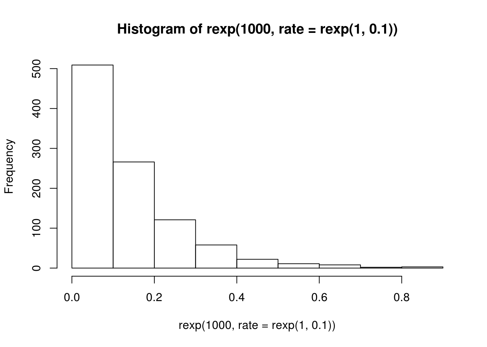
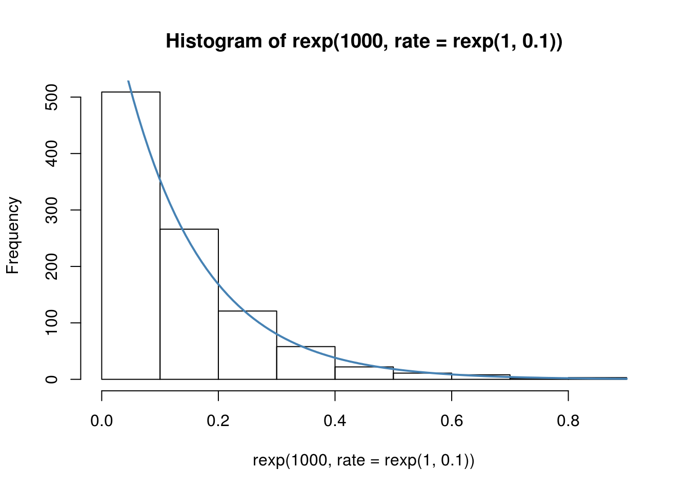
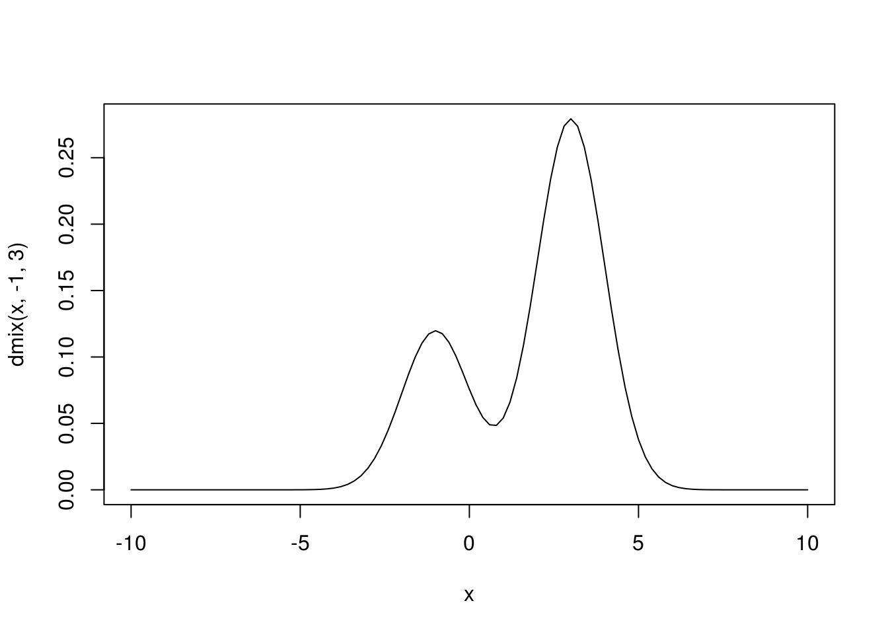
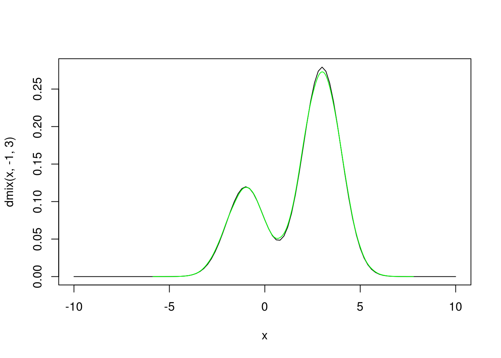

4.2 EM algoritam
EM algoritam (Expectation-Maximization) je algoritam za nalaženje ocena maksimalne verodostojnosti, koji nalazi veoma široku upotrebu u statistici, posebno Bajesovskoj. Glavna ideja je da nam omogući da nadjemo ocene maksimalne verodostojnosti u prisustvu nedostajućih podataka ili skrivenih parametara.
Ilustrovaćemo postupak kroz dva primera.
4.2.1 Ocena parametra sa histograma
Pretpostavimo da smo, umesto konkretnog uzorka, dobili samo histogram odredjenog uzorka iz eksponencijalne raspodele sa nepoznatim parametrom \(\lambda\) koji želimo da ocenimo na osnovu tog histograma.
set.seed(1)
# napravicemo histogram uzorka iz iz nepoznate eksponencijalne raspodele
h <- hist(rexp(1000, rate = rexp(1, 0.1)))
h## $breaks
## [1] 0.0 0.1 0.2 0.3 0.4 0.5 0.6 0.7 0.8 0.9
##
## $counts
## [1] 509 266 121 58 22 11 8 2 3
##
## $density
## [1] 5.09 2.66 1.21 0.58 0.22 0.11 0.08 0.02 0.03
##
## $mids
## [1] 0.05 0.15 0.25 0.35 0.45 0.55 0.65 0.75 0.85
##
## $xname
## [1] "rexp(1000, rate = rexp(1, 0.1))"
##
## $equidist
## [1] TRUE
##
## attr(,"class")
## [1] "histogram"Budući da je logaritamska verodostojnost jednaka \[\log L(\lambda; \mathbf{x})=n\log\lambda - \lambda\sum_{i=1}^nx_i,\] klasičnim postupkom možemo zaključiti da je ocena maksimalne verodostojnosti \[\hat{\lambda} = \frac{n}{\sum_{i=1}^nx_i}=\frac1{\overline{X}_n}.\] Medjutim, naš problem je sada što mi nemamo uzorak \(x_1,\dots,x_n\), pa ovako ne možemo odrediti ocenu. Ono što imamo je niz parova \((u_1,v_1),\dots,(u_n, v_n)\) koji odredjuju kom intevalu pripadaju odgovarajući elementi uzorka. Dakle, \(x_i\in(u_i,v_i),\ \forall i=1,\dots,n.\)
Srećom, na osnovu znanja o intervalu kom pripada \(x_i\) možemo oceniti vrednost elementa \(x_i\) uzimanjem uslovnog očekivanja, tačnije: \[\hat{x_i} = E\left(X_i\mid X_i\in(u_i,v_i)\right)=\frac1\lambda + \frac{u_ie^{-\lambda u_i} - v_ie^{-\lambda v_i}}{e^{-\lambda u_i} - e^{-\lambda v_i}}.\] Izvodjenje ovog uslovnog očekivanja ostavljamo čitaocu kao dobru vežbu za utvrdjivanje znanja iz Teorije verovatnoće.
Ovde opet imamo problem, sada nam nije poznato \(\lambda\), pa ne možemo da odredimo tačnu ocenu elemenata uzorka. Vidimo da imamo “cirkularnu” zavisnost izmedju \(\lambda\) i \(x_i\), ako ne znamo jedno, ne možemo oceniti drugo.
Zato ćemo pribeći iterativnom algortmu.
- Počećemo od neke proizvoljne ocene \(\hat{\lambda}\).
- (korak E) Iskoristićemo ovu ocenu da odredimo očekivanje \[\hat{x_i} = \frac{1}{\hat{\lambda}} + \frac{u_ie^{-\hat{\lambda} u_i} - v_ie^{-\hat{\lambda} v_i}}{e^{-\hat{\lambda} u_i} - e^{-\hat{\lambda} v_i}},\ i=1,\dots,n.\]
- (korak M) Na osnovu ocena elemenata \(x_i\), poboljšaćemo ocenu \(\lambda\) maksimizovanjem funkcije verodostojnosi, tj. uzimamo \[\hat{\lambda} = \underset{\lambda}{\mathrm{argmax}}\log L(\lambda; \mathbf{\hat{x}})=\frac{n}{\sum_{i=1}^n\hat{x_i}}.\]
- Ponavljamo korake E i M iterativno dok ne konvergiramo nekoj oceni nepoznatog parametra \(\lambda\).
Vidimo odakle potiče ime EM algoritma – smenjujemo korake E i M dok ne dobijemo dobru ocenu (ne maksimizujemo neko očekivanje).
Primenimo konačno ovaj algoritam da dobijemo ocenu za naš uzorak. Prvo ćemo implementirati algoritam i potrebne korake.
# korak E - ocekivanja x-eva na osnovu neke cene lambda
expected_xs <- function(lambda, u, v) {
1/lambda +
(u*exp(-lambda*u) - v*exp(-lambda*v))/
(exp(-lambda*u) - exp(-lambda*v))
}
# korak M - na osnovu ocenjenog uzorka, dati MMV ocenu lambda
maximize_logL <- function(xs) {
1/mean(xs)
}
# funkcija koja trazi ocenu EM algoritmom za datu pocetnu vrednost
# lambda i vektor levih (u) i desnih (v) granica intervala za x_i
EM_estimate <- function(lambda_0, u, v, tol = 1e-8, maxiter = 1000) {
xs <- expected_xs(lambda_0, u, v)
lambda <- maximize_logL(xs)
print(lambda)
iter <- 1
while((abs(lambda - lambda_0) > tol) &&
iter < maxiter) {
iter <- iter + 1
lambda_0 <- lambda
xs <- expected_xs(lambda_0, u, v)
lambda <- maximize_logL(xs)
print(lambda)
}
lambda
}Ostaje jos da odredimo na osnovu histograma vrednosti \(u_i\) i \(v_i\). Nije bitno uredjenje uzorka, pa možemo pretpostaviti da imamo sortiran uzorak \(x_i\). Odatle, ukoliko imamo 100 elemenata u prvom stupcu histograma, nekom intervalu \((a,b)\), onda možemo zaključiti da je \(\forall i=1,\dots,100,\ x_i\in(u_i, v_i)=(a,b)\), odnosno da je \(u_1=\dots=u_{100}=a\) i \(v_1=\dots=v_{100}=b\). Slično važi i za ostale stupce. U R-u niz parova \((u_1,v_1),\dots,(u_n, v_n)\) možemo kreirati na sledeći način
u <- rep(head(h$breaks, -1), h$counts)
v <- rep(tail(h$breaks, -1), h$counts)Odavde sada možemo da odredimo ocenu \(\lambda\) EM algoritmom:
EM_estimate(1, u, v)## [1] 7.129271
## [1] 7.395976
## [1] 7.407838
## [1] 7.408366
## [1] 7.408389
## [1] 7.40839
## [1] 7.40839
## [1] 7.40839## [1] 7.40839Zaključili smo da je ocena \(\hat{\lambda} = 7.41\). Pošto ne znamo da li je ova ocena tačna, na neki način treba proveriti kako se ova ocena uklapa u podatke.
Najjednostavniji način je da preko histograma nacrtamo gustinu eksponencijalne raspodele sa ocenjenim parametrom.
plot(h)
# mnozenje sa 100 je da bismo sa gustine presli na skalu frekvencija
# jer je density = counts / (sum(counts) * bin_width), sto je u nasem
# slucaju density = counts / (1000 * 0.1) = counts / 100
curve(100*dexp(x, rate = 7.41), add=TRUE, col="steelblue", lwd = 2)
Kriva vrlo dobro odgovara histogramu, pa možemo biti zadovljni ocenom.
4.2.2 Ocenjivanje mešavine normalnih raspodela
Pretpostavimo da imamo uzorak \(x_1,\dots,x_n\) iz mešavine dve normalne raspodele, sa gustinom \[f(x) = (1-p)f_{\mu_1}(x)+p f_{\mu_2}(x),\] gde su \[f_{\mu_i}(x) = \frac{1}{\sqrt{2\pi}}e^{-\frac{(x-\mu_i)^2}{2}},\quad i=1,2.\] Dakle imamo mešavinu normalnih \(\mathcal{N}(\mu_1, 1)\) i \(\mathcal{N}(\mu_2, 1)\) raspodela.
Cilj će nam biti da odredimo, koristeći EM algoritam, ocene za parametre \(\mu_1\) i \(\mu_2\).
Mešavina normalnih raspodela
U našem primeru koristićemo vrednost \(p = 0.7\), radi jednostavnosti.
Ovako izgleda odgovarajuća gustina
dmix <- function(x, mi1, mi2) {
0.3 * dnorm(x, mi1, 1) +
0.7 * dnorm(x, mi2, 1)
}
# Uzmemo konkretne vrednosti m_1 = -1 i m_2 = 3
curve(dmix(x, -1, 3), xlim = c(-10, 10))
Ova raspodela nastaje tako što \(X\) uzima vrednost iz jedne normalne raspodele sa verovatnoćom \(p\) ili iz druge normalne sa verovatnoćom \(1-p\).
Dakle imamo dodatnu indikatorsku slučajnu veličinu \[W\sim\mathcal{Ber}(p),\] a slučajna veličina \(X\) je definisana kao \[X = (1-W)Y_1+W\,Y_2,\] gde je \(Y_i\sim\mathcal{N}(\mu_i, 1),\ i=1,2\).
Iz ovakve reprezentacije vidimo i način na koji možemo generisati odgovarajući uzorak.
rmix <- function(n) {
u <- runif(n)
(u < 0.3) * rnorm(n, -1) +
(u >= 0.3) * rnorm(n, 3)
}Testiramo da li odgovara raspodeli…
curve(dmix(x, -1, 3), xlim = c(-10, 10))
lines(density(rmix(100000)), col="green")
Generišimo stoga uzorak na osnovu kog ćemo ilustrovati metodu. Stvarne vrednosti će biti \(\mu_1=-1\) i \(\mu_2=3\).
uzorak <- rmix(1000)Fun fact: Logaritam funkcije verodostojnosti se može nacrtati u 3 dimenzije koristeći paket rgl sledećim kodom.
mixlogL <- function(mi1, mi2) {
sum(log(dmix(uzorak, mi1, mi2)))
}
mi1 <- seq(-5,6,length.out = 100)
mi2 <- seq(-3,8,length.out = 100)
z <- outer(mi1, mi2, Vectorize(mixlogL))
library(rgl)
persp3d(mi1, mi2, z, color = "steelblue")Nalaženje ocene
U ovom slučaju, kada imamo uzorak \(x_1,\dots,x_n\) iz mešavine raspodela, skrivena promenljiva nam je pripadnost odredjenog elementa uzorka jednoj od raspodela, odnosno, iz vrednosti \(X_i\) ne znamo vrednost indikatora \(w_i\).
Naravno, možemo oceniti vrednost tog indikatora uslovnim očekivanjem \[\hat{w_i}=E(W_i|X_i=x_i),\] što nam čini korak E u EM algoritmu.
Nakon kraćeg izvodjenja koje ostavljamo za vežbu iz Teorije verovatnoće dobijamo ocenu \[\hat{w_i}=P(W_i=1|X_i=x_i)=\frac{pf_{\mu_2}(x_i)}{(1-p)f_{\mu_1}(x_i)+pf_{\mu_2}(x_i)}.\]
Dakle korak E se implementira sledećom funkcijom
# za p smo uzeli 0.7
expectation <- function(mi1, mi2, xs) {
0.7*dnorm(xs, mi2) /
(0.3*dnorm(xs, mi1) +
0.7*dnorm(xs, mi2))
}Ova funkcija zavisi od nepoznatih parametara \(\mu_1\) i \(\mu_2\), tako da nam je potreban način da njih ocenimo u M koraku EM algoritma.
Pošto je uslovna gustina \[f_{X|W=w_i}(x_i)=\begin{cases}f_{\mu_1}(x_i),& w_i=0\\ f_{\mu_2}(x_i),& w_i=1\end{cases},\] logaritamska funkcija verodostojnosti, kada imamo znanje o skrivenoj promenljivoj \(W\) (a imačemo ocenu iz koraka E), će biti \[\begin{align} \log L(\mathbf{\mu}; \mathbf{x}, \mathbf{w}) &= \log \left(\prod_{w_i=0}f_{\mu_1}(x_i)\prod_{w_i=1}f_{\mu_2}(x_i)\right)\\ &= \sum_{w_i=0}\log f_{\mu_1}(x_i) + \sum_{w_i=1}\log f_{\mu_2}(x_i)\\ &= \sum_{i=1}^n ((1-w_i)\log f_{\mu_1}(x_i)+w_i\log f_{\mu_2}(x_i)), \end{align}\]
gde je \(\mathbf{\mu}=(\mu_1,\mu_2)^\top\). Odavde vidimo da je ocena metodom maksimalne verodostojnosti za \(\mu\) jednaka \[\hat{\mathbf{\mu}} = \underset{\mu}{\mathrm{argmax}}\log L(\mathbf{\mu}; \mathbf{x}, \mathbf{w}).\]
Sad možemo da implementiramo korak M algoritma
# logaritam verodostojnosti
logLxw <- function(mi1, mi2, xs, ws) {
sum((1-ws)*log(dnorm(xs, mi1)) +
ws*log(dnorm(xs, mi2)))
}
# trazimo argmax(L) tako sto nadjemo argmin(-L) pomocu funkcije nlm
maximization <- function(Ew, xs, mi_0) {
nlm(function(mi) -logLxw(mi[1], mi[2], xs, Ew), mi_0)$estimate
}Kada imamo sve korake implementirane, ostaje samo da implementiramo sam algoritam koji iterira ove korake
EM_estimate_mix <- function(mi_0, xs, tol=1e-6, maxiter=100) {
iter <- 0
Ew <- expectation(mi_0[1], mi_0[2], xs)
mi <- maximization(Ew, xs, mi_0)
print(mi)
while(any(abs(mi - mi_0) > tol)){
if(iter == maxiter)
break
mi_0 <- mi
Ew <- expectation(mi_0[1], mi_0[2], xs)
mi <- maximization(Ew, xs, mi_0)
print(mi)
iter <- iter + 1
}
mi
}Primenimo algoritam za početnu vrednost \(\mathbf{\mu}=(0,1)^\top\).
EM_estimate_mix(c(0,1), uzorak)## Warning in nlm(function(mi) -logLxw(mi[1], mi[2], xs, Ew), mi_0): NA/Inf
## replaced by maximum positive value
## Warning in nlm(function(mi) -logLxw(mi[1], mi[2], xs, Ew), mi_0): NA/Inf
## replaced by maximum positive value## [1] -0.8442056 2.5452301## Warning in nlm(function(mi) -logLxw(mi[1], mi[2], xs, Ew), mi_0): NA/Inf
## replaced by maximum positive value## [1] -1.132248 2.965951
## [1] -1.113066 2.990345
## [1] -1.106408 2.993856
## [1] -1.104836 2.994616
## [1] -1.104475 2.994789
## [1] -1.104392 2.994828
## [1] -1.104373 2.994837
## [1] -1.104368 2.994841
## [1] -1.104367 2.994842
## [1] -1.104367 2.994842## [1] -1.104367 2.994842Vidimo da je algoritam konvergirao ka \(\hat{\mathbf{\mu}}=(-0.97, 2.96)^\top\) približno pravoj vrednosti \(\mathbf{\mu}=(-1, 3)^\top\).